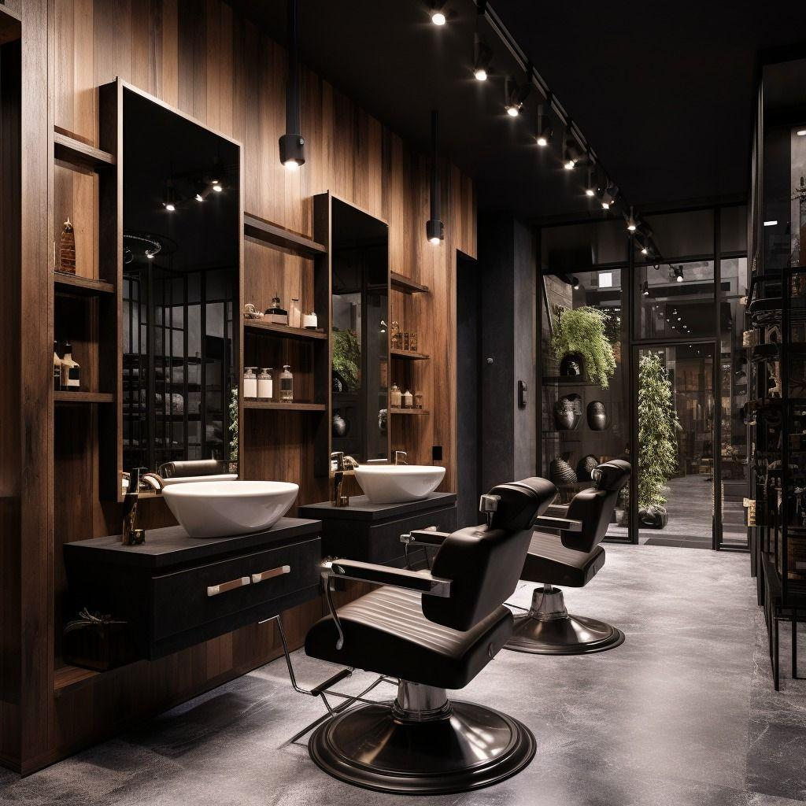

Consulta antes do corte
Entendemos o seu pedido antes de ligar a máquina.
Barbearia contemporânea em São Bento do Sul. Cortes, barba e cuidados pensados para o seu cabelo e a sua rotina, com consulta antes de cada corte.
Vértice é o ponto em que diferentes linhas se encontram. Na barbearia, essas linhas são a personalidade do cliente, a habilidade do profissional e o resultado final do serviço.
Aqui ninguém precisa seguir um padrão. Cada pessoa tem cabelo, rotina e preferências diferentes, e o nosso trabalho é encontrar o corte ou o tratamento que combina com você, seja um degradê moderno ou um corte social bem executado.
Oferecer serviços de barbearia de qualidade, com técnica, atenção aos detalhes e respeito à identidade de cada cliente.
Ser referência local em barbearia moderna, reconhecida pela qualidade dos serviços, pela experiência de atendimento e pela identidade da marca.
Entendemos o seu pedido antes de ligar a máquina.
Simetria, acabamento e consistência em cada visita.
Adaptamos a referência ao seu cabelo e à sua rotina.
Ambiente confortável, agendamento organizado e comunicação digital.
Acompanhamos as tendências e aprimoramos as técnicas da equipe.
Trabalhamos diferentes comprimentos, texturas e estilos. Uma foto pode servir de referência, mas o corte é adaptado à densidade, à textura, ao comprimento e ao resultado que você quer.
Degradê baixo, discreto e versátil.
Degradê médio, com contraste equilibrado.
Degradê alto, com aparência mais marcada.
Degradê que chega à pele nas regiões inferiores.
Acabamento gradual nas costeletas e na nuca.
Curto, uniforme e de baixa manutenção.
Curto, com um pouco mais de comprimento no topo.
Topo texturizado com acabamento contemporâneo.
Franja curta e formato definido.
Contraste entre laterais e comprimento atrás.
Degradê arredondado ao redor das orelhas.
Laterais curtas em contraste com o topo.
Cabelo frontal com volume e direcionamento.
Cabelo penteado para trás, com o acabamento que você escolher.
Limpo, sóbrio e bem executado.
Divisão lateral.
Sóbrio, pensado para a rotina profissional.
Acabamento natural.
Laterais controladas.
Feitos quando solicitados.
Atendemos cabelos cacheados, crespos, ondulados e compridos. Respeitamos a textura natural dos fios e orientamos sobre a manutenção do estilo escolhido.
Não encontrou o seu estilo? Leve uma referência. A gente interpreta com você.
Falar com a Vértice
A Vértice é um espaço completo de barbearia e cuidados pessoais. Cada serviço pode ser contratado separadamente ou combinado em uma única visita.
Procedimentos químicos são realizados somente com avaliação prévia, produtos apropriados e profissionais capacitados.
Agendar um serviçoEscolha um serviço individual ou combine em uma única visita.
Manutenção rápida para renovar contornos ou fazer ajustes específicos.
Corte de cabelo com consulta inicial, execução técnica e finalização.
Modelagem da barba, acabamento dos contornos e aplicação de produtos adequados.
Corte de cabelo e serviço de barba em uma única visita.
A experiência mais completa: corte, barba e cuidados cosméticos adicionais definidos previamente.
Um processo claro, para que você participe de cada decisão.
Pelo WhatsApp ou pelo Instagram. Você escolhe o serviço e consulta os horários disponíveis.
Antes do corte, o barbeiro pergunta qual estilo você quer, como costuma arrumar o cabelo, quanto tempo dedica à manutenção e se tem alguma referência.
Observamos comprimento, textura e caimento, recomendamos possibilidades e explicamos as adaptações necessárias. Você aprova a proposta antes de começar.
Máquina, tesoura, navalhete ou o instrumento certo para o serviço, trabalhando por etapas: proporções, transições e simetria.
Conferimos o resultado, fazemos os ajustes, removemos os fios soltos e aplicamos produtos de finalização quando apropriado.
Você observa o resultado e pode pedir pequenos ajustes dentro do serviço contratado. Também explicamos como reproduzir a finalização em casa e manter o corte.
A ideia é você sair satisfeito com a execução e sabendo cuidar do próprio cabelo.
Um ambiente moderno, organizado e confortável, sem depender da estética das barbearias antigas.
Estações bem iluminadas, espelhos amplos, cadeiras profissionais e bancadas organizadas.
Lavagem profissional e cuidados capilares em um espaço preparado para isso.
Área de espera confortável, climatização, playlist contemporânea e produtos bem apresentados.
Grafite e preto, madeira, metal escovado e verde profundo.
Conhecer pessoalmenteAndré e Beatriz se conheceram trabalhando com cuidados capilares e perceberam que muitos lugares priorizam a execução rápida do corte, sem tempo para entender o cliente.
Criaram a Vértice a partir de uma ideia simples: um bom corte não depende só de seguir uma referência, mas de saber interpretá-la.
Destaca-se pelos cortes com degradê, pela precisão dos acabamentos e pela atenção à simetria. Estuda tendências e adapta estilos populares às características de cada cliente.
Perfil criativo, com preferência por cortes na tesoura, texturização e estilos contemporâneos. Entende o que o cliente quer transmitir com a aparência e traduz isso em um resultado que cabe na rotina.
Não é obrigatório, mas ajuda. Uma foto serve de referência e o corte é adaptado à densidade, à textura, ao comprimento e ao resultado que você deseja.
Sim. Respeitamos a textura natural dos fios e orientamos sobre a manutenção do estilo escolhido.
Sim, o barbear tradicional é feito por profissional qualificado, com os cuidados de higiene adequados.
Sim, mediante avaliação prévia e agendamento, com produtos apropriados e profissionais capacitados.
Sim. Ao final você confere o resultado e pode pedir pequenos ajustes dentro do serviço contratado.
Pelo botão de WhatsApp desta página ou pelo nosso Instagram. Você escolhe o serviço e consulta os horários disponíveis.
Escolha o serviço, diga o dia e o período de preferência e envie pelo WhatsApp. A gente confirma os horários disponíveis por lá.
Precisa remarcar ou cancelar? Fale com a gente pelo mesmo WhatsApp.
Os dados deste formulário não ficam guardados no site. Eles só vão na mensagem que você enviar pelo WhatsApp.
São Bento do Sul, SC
Consulte os horários pelo WhatsApp